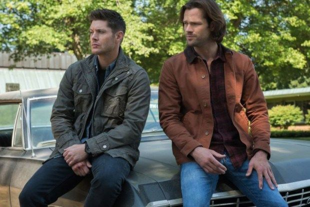

Seja bem-vindo ao
 Quero conhecer mais sobre os Winchesters!O que foi o grande sucesso "SUPERNATURAL"?
A série foi um grande sucesso, dando início nas gravações em 2005, que também é seu ano de estreia na TV (de início com parceria com a WB). Os irmãos Dean, interpretado por Jensen Ackles, e Sam, interpretado por Jared Padalecki, encaram uma longa estrada caçando monstros e criaturas de lendas urbanas conhecidas dos Estados Unidos no carro deixado pelo pai, John Winchester. Seu carro é um clássico, um IMPALA 67, que ficou conhecido como "BABY" ao longo da série.
Tudo começou quando Mary, mãe dos irmãos Winchester dá a luz ao seu segundo filho, Sam. Mas, para salvar a vida de seu marido, John, acaba vendendo a alma de Sam para Azazel, o demônio de olho amarelo, então quando o bebê completasse 6 meses ele viria o pegar.
Saiba mais sobre SUPERNATURAL

Ao longo das temporadas, podemos observar episódios onde retratam Sam e Dean quando eram crianças e seu pai saía para caçar coisas sobrenaturais e deixava os meninos a sós. Então, podemos observar suas iniciais gravadas em mesas e em outros locais desde o começo das temporadas.
Com a caça ao demõnio de olho amarelo que matou Mary, os meninos descobrem a existência de uma arma nomeada de "Colt" que poderia levar qualquer demônio ou criatura sobrenatural a morte.
A única criatura que não pode ser morta pelo Colt é o próprio Lúcifer, além de Deus.
O amuleto. Muito comum observarmos ele sempre pendurado no pescoço de Dean Winchester. Foi um presente de seu irmão, Sam, quando eram apenas crianças. É especial para eles e curiosamente seria o amuleto que brilharia na presença de Deus.
Está bastante presente na 5ª temporada de Supernatural. Mas, Dean o joga fora no lixo após ter uma séria discussão com Sam.
Esta marca é conhecida por todo fã de Supernatural, isto porque Sam e Dean possuem tatuagens em seus corpos com esta marca. A famosa marca conhecida por ser "anti-possessão.
Funciona como um talismã de proteção contra entidades, demônios e outros seres.
Onde assistir?
- Podemos assistir a "Supernatural" em plataformas de filmes e séries, como a HBO e PrimeVideo.